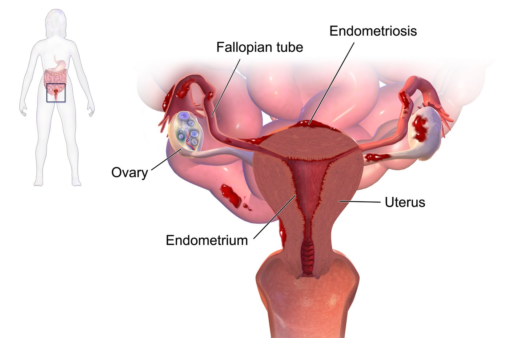

10 years
Median delay from first symptoms to diagnosis in Germany and Austria — 7.7 of them after the first gynaecologist visit.
Decision support for GPs and gynaecologists
At the first visit, the doctor enters a short structured symptom history. HETAW returns an interpretable risk score with the reasons behind it. The doctor decides whether to investigate or refer.
In validation · Not yet available for clinical use

Tissue similar to the uterine lining grows outside the uterus — on the ovaries, the bowel, the bladder, the peritoneum, sometimes the diaphragm or nerves. Because the lesions are spread through the body, so are the symptoms. A woman sees one doctor per complaint, and nobody connects the fragments.
Median delay from first symptoms to diagnosis in Germany and Austria — 7.7 of them after the first gynaecologist visit.
Receive at least one wrong diagnosis first — irritable bowel, cystitis, "stress" — before endometriosis is named.
Women with a confirmed diagnosis in Germany in 2024 — more than double 2005, and still below the true number affected.
Sources: Hudelist et al., Human Reproduction 2012; BARMER Arztreport 2026.
What the delay costs
Years without a diagnosis mean years of untreated inflammation and pain. The coloured pieces show what commonly follows: chronic pain, fatigue, infertility, bowel and bladder problems, pregnancy complications, depression and anxiety, and associations with autoimmune conditions such as Hashimoto’s thyroiditis.
The white pieces are the rarer ones — ureteral endometriosis with silent kidney damage, lesions on the diaphragm or lung, and small increases in cardiovascular risk and ovarian cancer. Most women never experience these; they are listed because they are the reason delay is not harmless.
Associations reported in the literature (Shigesi et al. 2019, Human Reproduction Update; Gambadauro et al. 2019, AJOG; Barnard et al. 2024, JAMA). Illustration: Blausen Medical Communications, CC BY 3.0, modified.

What HETAW is
HETAW is a decision-support app that helps GPs and gynaecologists recognise endometriosis earlier. At the first visit, the doctor enters a short structured symptom history, and HETAW returns an interpretable risk score with the reasons behind it; the doctor decides whether to investigate or refer. HETAW does not diagnose and does not use insurer data: everything it scores is entered by the doctor.
Pain pattern, cycle, digestive, urinary and fatigue symptoms, reproductive history, prior consultations — two to three minutes.
A calibrated pre-test risk score and the symptom patterns that drove it, in plain language. Interpretable by design.
Watch and re-evaluate, order ultrasound or blood work, or refer to a certified centre. HETAW supports the decision; it never makes it.
Today the symptoms are treated one fragment at a time across up to five specialties, and the right referral comes years late. With HETAW, the first doctor the patient sees runs a short structured history and receives a risk score with reasons. The referral decision stays with the doctor.
… and back to the GP. Each specialist sees one fragment, treats it symptomatically and sends her home. Years pass between the first visit and the right referral.
GP or gynaecologist. Pain, cycle, bowel or bladder complaint — the first visit.
A structured symptom history: pain, cycle, digestive, urinary and fatigue symptoms, reproductive history, prior consultations. Two to three minutes.
A calibrated risk score with plain-language reasons: which answers raised it, which lowered it, and how confident the estimate is. Interpretable model.
Watch and re-evaluate, order ultrasound or blood work, or refer to a certified endometriosis centre. The doctor stays in charge.
The certified centre confirms and treats — years, not a decade, after the first symptoms.
All inputs are entered by the doctor in the consultation. HETAW uses no insurer, claims or electronic-record data and does not communicate with the patient.
Three design principles separate HETAW from a symptom checker.
HETAW does not diagnose and does not communicate with the patient. It gives the doctor a structured, defensible basis for a decision he or she makes anyway.
No insurer, claims or electronic-record data. Consent stays inside the consultation, and the tool runs in any practice without an IT integration project.
An interpretable model class, per-patient reasons, calibrated probabilities and a published model card — requirements of the MDR and the EU AI Act, treated as product features.
Often the first contact for pain, fatigue and cycle complaints — the entry point where endometriosis is least likely to be considered.
For practices →A consistent, documented first-visit assessment that fits the consultation and makes the case for work-up or referral explicit.
For practices →Better-prepared referrals — and HETAW's validation partners: the score is validated first on retrospective centre data.
For partners →Earlier recognition shortens the years of unresolved visits, tests and misdirected treatment — measurable against claims data.
For partners →The question set is built from published evidence and clinical review, then evaluated on retrospective data from certified endometriosis centres before any practice uses it. Results are published openly.
Validation plan and partnersQuestion set development and retrospective validation with endometriosis centres.
Combining routine labs, ultrasound and MRI findings into a post-test likelihood.
Pilot within a selective-care contract; CE marking as a medical device.
“Founded in Berlin by a data scientist who read the diagnostic-delay numbers and did not accept them.”
HETAW is founded by Fahrnaz Jayrannejad, a data scientist with an MSc in AI and a background in software engineering, proteomics and bioinformatics, after eight years building machine-learning systems in industry. The company works with clinicians, epidemiologists and endometriosis centres in Berlin and across Germany. About HETAW →
Retrospective validation on your data, joint publication, clinical review of the question set.
Tell us what would make a first-visit tool workable in your practice. Early-access list for the pilot.
Validation cooperation (§68a SGB V) leading to a selective-care pilot (§140a SGB V).